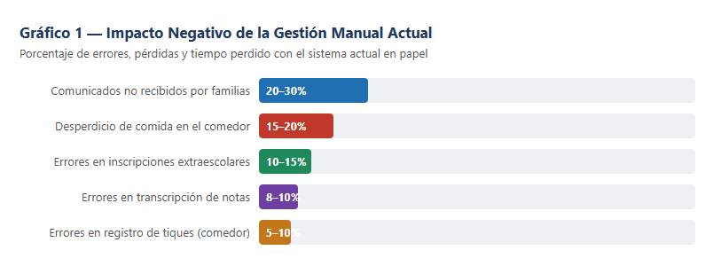
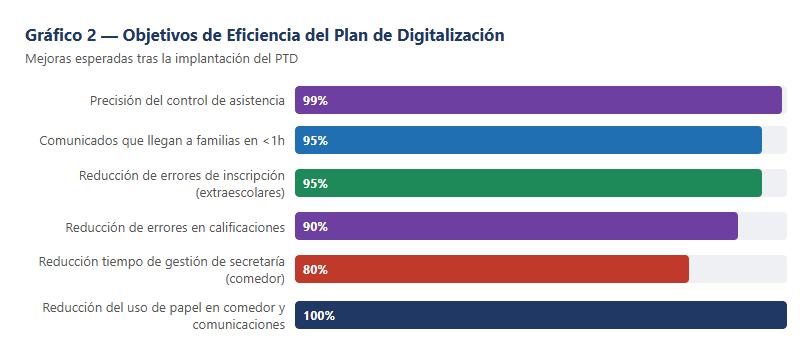
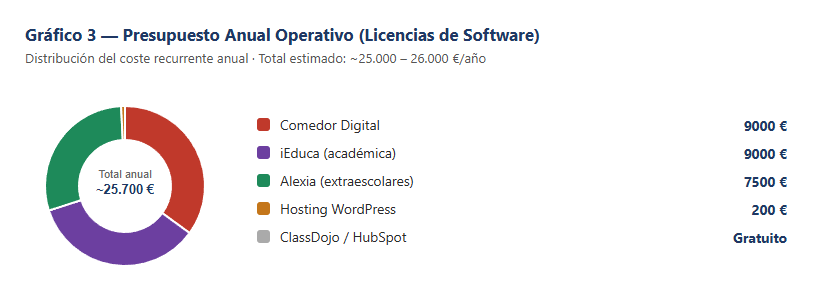
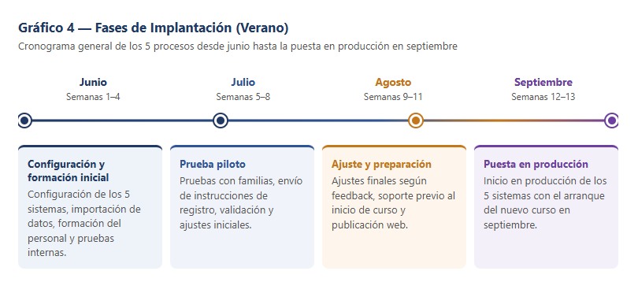
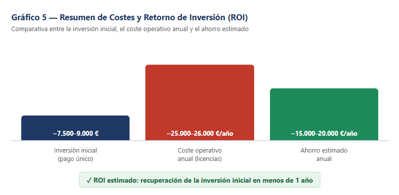

El presente documento recoge el Plan de Transformación Digital (PTD) de una escuela tradicional, desarrollado en respuesta al encargo del consejo de dirección del centro, que ha decidido iniciar un proceso de digitalización integral para mejorar la eficiencia operativa, reducir el consumo de papel y ofrecer una experiencia más moderna a sus alumnos, familias y personal.
El equipo de consultores, formado por 5 especialistas en digitalización, ha analizado los procesos internos del centro y ha seleccionado cinco áreas de actuación prioritarias:
Somos el equipo de consultores en transformación digital contratado por el centro para diseñar este plan. Cada miembro se ha especializado en uno de los cinco procesos, encargándose de su diagnóstico, su propuesta de solución y la parte correspondiente de este sitio web.
Pulsa cada proceso para ver su diagnóstico, la solución propuesta, los objetivos, la temporalización y la simulación de la aplicación.
Responsable de este proceso: Ilias
Actualmente la gestión del comedor escolar es completamente manual y depende del papel en cada una de sus fases:
Impacto real de estos problemas:
Implementaremos una plataforma digital de reserva y gestión de menús que permita a las familias reservar y pagar desde el móvil u ordenador, actualizando automáticamente la lista de comensales en cocina.
| Período | Tarea | Responsable |
|---|---|---|
| Semana 1 de junio | Contactar y contratar la plataforma. Configurar menús, precios y base de datos de alumnos. | Dirección + Secretaría |
| Semana 2 de junio | Instalar tablet en comedor. Probar conexión WiFi y funcionamiento del escáner QR. | Coordinador TIC |
| Semanas 3–4 de junio | Formación del personal de cocina y conserjería (sesión 3h). Pruebas internas. | Coordinador TIC |
| Julio | Enviar comunicado a familias con instrucciones. Resolver dudas. Período de prueba voluntario. | Secretaría + Tutores |
| Agosto | Ajustes finales según feedback. Preparar soporte para inicio de curso. | Coordinador TIC |
La aplicación para familias presenta las siguientes pantallas y funcionalidades principales:
Responsable de este proceso: Enric
La comunicación entre la escuela y las familias se realiza casi exclusivamente a través de comunicados en papel transportados por los propios alumnos en sus mochilas:
Impacto real de estos problemas:
Implantaremos una plataforma digital de comunicación escolar que permita al equipo docente enviar comunicados, circulares y avisos urgentes directamente al móvil de las familias, con confirmación de lectura automática.
| Período | Tarea | Responsable |
|---|---|---|
| Semana 1 de junio | Crear cuenta del centro en ClassDojo. Configurar clases, tutores y asignaturas. | Coordinador TIC |
| Semana 2 de junio | Formación del claustro (sesión 2h). Resolver dudas de uso. | Coordinador TIC |
| Semanas 3–4 de junio | Preparar códigos de invitación por clase. Redactar comunicado a familias con instrucciones. | Tutores + Secretaría |
| Julio | Envío del comunicado a familias. Soporte para el registro. Prueba piloto con 2–3 clases voluntarias. | Tutores |
| Agosto | Revisar tasa de registro. Contactar a familias no unidas. Ajustes finales. | Coordinador TIC + Dirección |
La plataforma ClassDojo ofrece las siguientes funcionalidades adaptadas al centro:
Responsable de este proceso: Juan
La gestión académica se apoya en hojas de cálculo individuales de cada profesor, documentos en papel y sistemas no conectados entre sí, generando enorme duplicidad de trabajo y ausencia de visión global:
Impacto real de estos problemas:
Implementaremos un Sistema de Gestión del Aprendizaje (SGA) que centralice toda la información académica: notas, asistencia, horarios y comunicaciones, accesible en tiempo real por profesores, alumnos y familias.
| Período | Tarea | Responsable |
|---|---|---|
| Semanas 1–2 de junio | Contratar iEduca. Importar datos de alumnos, profesores y horarios. Configuración inicial. | Coordinador TIC + Secretaría |
| Semanas 3–4 de junio | Configurar criterios de evaluación con cada departamento. Personalizar boletines y actas. | Coordinador TIC + Jefes Depto. |
| Julio (semanas 1–2) | Formación del claustro (sesión 4h dividida en grupos). Práctica con datos del curso anterior. | Coordinador TIC |
| Julio (semanas 3–4) | Envío de instrucciones a familias. Soporte de acceso al portal. Prueba piloto. | Tutores + Coord. TIC |
| Agosto | Ajustes y correcciones según feedback. Configuración definitiva para el nuevo curso. | Coordinador TIC + Dirección |
La plataforma iEduca simula las siguientes funcionalidades integradas:
Responsable de este proceso: Mariano
La gestión de las actividades extraescolares se realiza de forma completamente manual, con escasa capacidad de planificación y seguimiento:
Impacto real de estos problemas:
Implementaremos una plataforma de gestión de actividades extraescolares que permita a las familias consultar el catálogo, inscribirse online, pagar de forma digital y recibir información de los monitores en tiempo real.
| Período | Tarea | Responsable |
|---|---|---|
| Semana 1 de junio | Configurar módulo de extraescolares en Alexia. Alta de actividades, plazas y precios. | Coordinador TIC + Dirección |
| Semana 2 de junio | Integrar pasarela de pago online. Pruebas de cobro simuladas. | Coordinador TIC |
| Semanas 3–4 de junio | Formación de monitores en app de asistencia. Pruebas internas del flujo completo. | Coordinador TIC |
| Julio | Publicar catálogo online. Apertura de inscripciones para el nuevo curso. Prueba piloto. | Secretaría + Coord. TIC |
| Agosto | Ajustes según feedback. Cerrar inscripciones y confirmar plazas. Comunicado a familias. | Secretaría + Dirección |
La plataforma Alexia en su módulo de extraescolares ofrece:
Responsable de este proceso: Gabriel
El proceso de captación de nuevos alumnos se basa exclusivamente en una jornada de puertas abiertas presencial organizada una vez al año, estrategia claramente insuficiente en el contexto digital actual:
Impacto real de estos problemas:
Renovaremos completamente la presencia digital de la escuela y crearemos un sistema de captación online que funcione los 365 días del año, complementando (no sustituyendo) la jornada de puertas abiertas.
| Período | Tarea | Responsable |
|---|---|---|
| Semanas 1–2 de junio | Rediseño de la web en WordPress: nueva estructura, textos e imágenes. Dominio y hosting. | Coordinador TIC + Dirección |
| Semana 3 de junio | Grabación del tour virtual 360° de todas las instalaciones del centro. | Coordinador TIC |
| Semana 4 de junio | Integración del tour en la web. Añadir formulario de contacto y conectar con HubSpot. | Coordinador TIC |
| Julio (semanas 1–2) | Configurar HubSpot: secuencias de email automáticas, pipeline de captación, formación del equipo. | Coordinador TIC + Dirección |
| Julio (semanas 3–4) | Revisión y pruebas de la web y el CRM. Ajustes de contenidos y SEO básico. | Coordinador TIC |
| Agosto | Publicación oficial de la nueva web. Difusión en redes sociales y comunidad local. | Dirección + Secretaría |
El ecosistema digital de captación incluye las siguientes funcionalidades:


A continuación se detalla el presupuesto completo estimado para la implementación de los cinco procesos digitalizados, incluyendo licencias de software, hardware y horas de trabajo del equipo técnico.
| Proceso | Herramienta | Coste/al./mes | Coste anual (300 al.) |
|---|---|---|---|
| Gestión del Comedor | Comedor Digital | 3 €/al./mes | 9.000 €/año |
| Comunicación Familias | ClassDojo | Gratuito | 0 € |
| Gestión Académica | iEduca | 3 €/al./mes | 9.000 €/año |
| Gestión Extraescolares | Alexia (https://www.alexiaeducaria.com/) | 2,5 €/al./mes | 7.500 €/año |
| Captación de Alumnos | HubSpot + WordPress | 0 € + hosting | ~200 €/año (hosting) |
| Concepto | Descripción | Coste estimado |
|---|---|---|
| Tablet control de acceso comedor | iPad o similar + soporte de pared | ~350 € |
| Cámara 360° para tour virtual | Ricoh Theta SC2 o similar | ~150–300 € |
| Mejora infraestructura WiFi | Access points adicionales (si necesario) | ~200–500 € |
| Dominio y hosting web (WordPress) | Hosting compartido anual | ~100–200 €/año |
| Tarea | Perfil | Horas | Coste estimado |
|---|---|---|---|
| Configuración de las 5 plataformas | Coordinador TIC | 80h | ~3.200 € |
| Formación del personal docente y admin. | Coordinador TIC | 20h | ~800 € |
| Diseño y desarrollo web (WordPress) | Diseñador/a web externo | 40h | ~2.000 € |
| Tour virtual 360° (grabación y edición) | Coordinador TIC | 8h | ~320 € |
| Soporte y ajustes durante agosto | Coordinador TIC | 16h | ~640 € |
| Concepto | Importe estimado |
|---|---|
| Inversión inicial (hardware + desarrollo web + RRHH, pago único) | ~7.500 – 9.000 € |
| Coste operativo anual (licencias de software) | ~25.000 – 26.000 €/año |
| Ahorro estimado en papel, tiempo y errores (anual) | ~15.000 – 20.000 €/año |
| ROI — recuperación de la inversión inicial | < 1 año |

Todos los procesos se implementan en paralelo durante los tres meses de verano, aprovechando la ausencia de actividad lectiva.
| Semana | Comedor | Familias | Académica | Extraescol. | Captación |
|---|---|---|---|---|---|
| Semana 1 | Contratación y config. | Crear cuenta ClassDojo | Contratar iEduca, importar datos | Configurar Alexia | Rediseño web WordPress |
| Semana 2 | Instalar tablet QR | Formación claustro (2h) | Configurar evaluación | Integrar pago online | Rediseño web (cont.) |
| Semana 3 | Formación personal (3h) | Preparar códigos invitación | Config. boletines y actas | Formación monitores | Grabación tour 360° |
| Semana 4 | Pruebas internas | Comunicado a familias | Config. boletines (cont.) | Pruebas internas flujo | Integrar tour + HubSpot |
| Semana | Comedor | Familias | Académica | Extraescol. | Captación |
|---|---|---|---|---|---|
| Semana 1 | Comunicado familias | Soporte registro familias | Formación claustro (4h) | Publicar catálogo online | Config. HubSpot CRM |
| Semana 2 | Prueba voluntaria | Prueba piloto 2–3 clases | Formación claustro (cont.) | Apertura inscripciones | Config. HubSpot (cont.) |
| Semana 3 | Resolución dudas | Prueba piloto (cont.) | Instrucciones familias | Prueba piloto actividades | Pruebas web + SEO |
| Semana 4 | Ajustes feedback | Ajustes feedback | Prueba piloto iEduca | Confirmar plazas | Pruebas web (cont.) |
| Semana | Comedor | Familias | Académica | Extraescol. | Captación |
|---|---|---|---|---|---|
| Sem. 1–4 | Ajustes finales. Soporte inicio curso. | Contactar familias no registradas. | Config. definitiva nuevo curso. | Cerrar inscripciones. Comunicado. | Publicación web. Campaña RRSS. |
Septiembre — Puesta en producción de los 5 sistemas. Todos los procesos digitalizados entran en funcionamiento real con el inicio del nuevo curso escolar. El equipo técnico permanece disponible para soporte durante las primeras semanas.

Una vez implementados los sistemas, se establece un seguimiento trimestral basado en los siguientes indicadores clave de rendimiento (KPIs):
| Proceso | KPI principal | Objetivo |
|---|---|---|
| Gestión del Comedor | % de reservas realizadas online | ≥ 95% en el 1er trimestre |
| Comunicación Familias | % de familias registradas en ClassDojo | ≥ 90% antes de septiembre |
| Gestión Académica | % de notas registradas sin errores | ≥ 99% en el 1er trimestre |
| Extraescolares | % de inscripciones realizadas online | 100% en el nuevo curso |
| Captación de Alumnos | Nº de leads generados por la web | +30% respecto al curso anterior |
El Coordinador TIC, junto con la Dirección del centro, realizará revisiones mensuales durante el primer trimestre y trimestrales a partir del segundo, presentando un informe de resultados al claustro y al consejo escolar al finalizar cada evaluación.

La digitalización de estos cinco procesos transformará el funcionamiento del centro de forma profunda y duradera. Se pasará de un modelo basado en papel, llamadas telefónicas y presencia física a un ecosistema digital, ágil e interconectado.
Las herramientas propuestas —Comedor Digital, ClassDojo, iEduca, Alexiaeducaria y el ecosistema de captación web— son soluciones probadas, económicas y adaptadas al contexto educativo español. Su implantación durante el verano garantiza una transición sin interrupciones, con tiempo suficiente para la formación del personal antes del inicio del nuevo curso en septiembre.